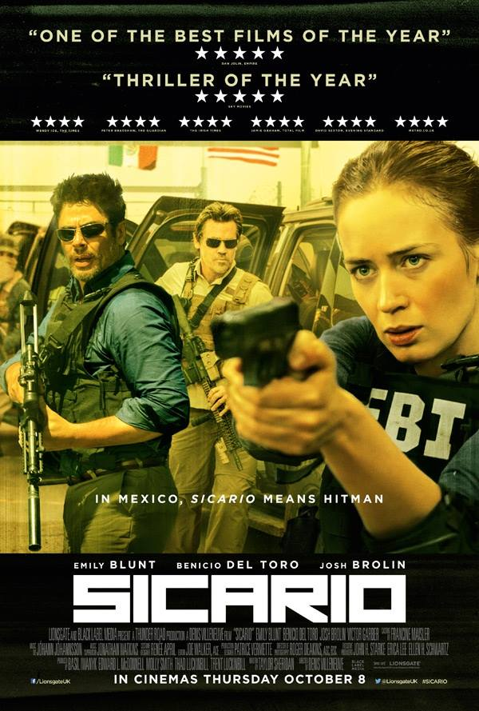
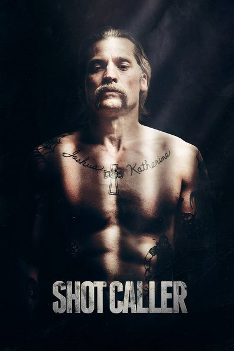
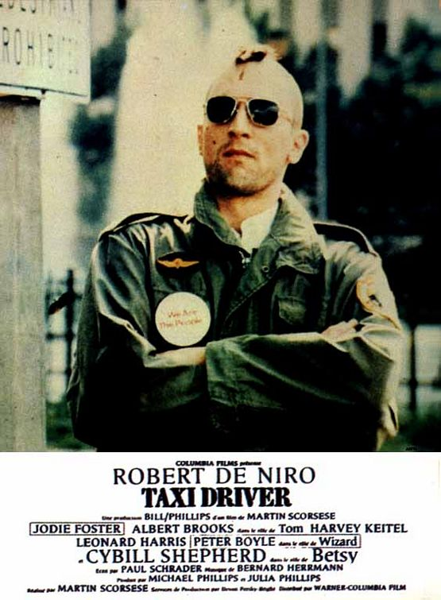
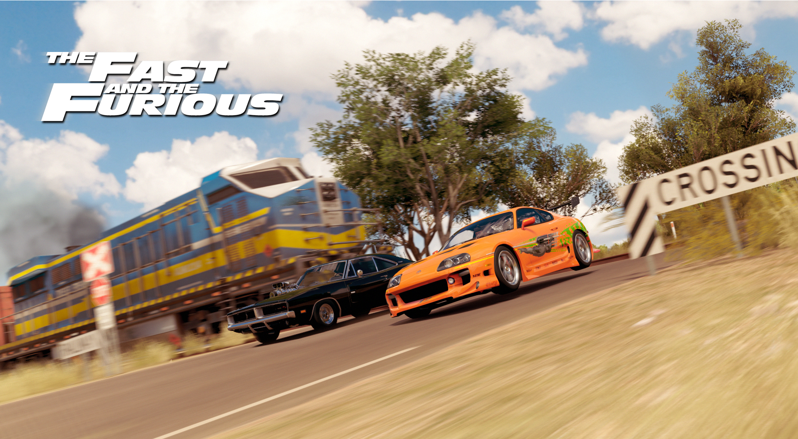
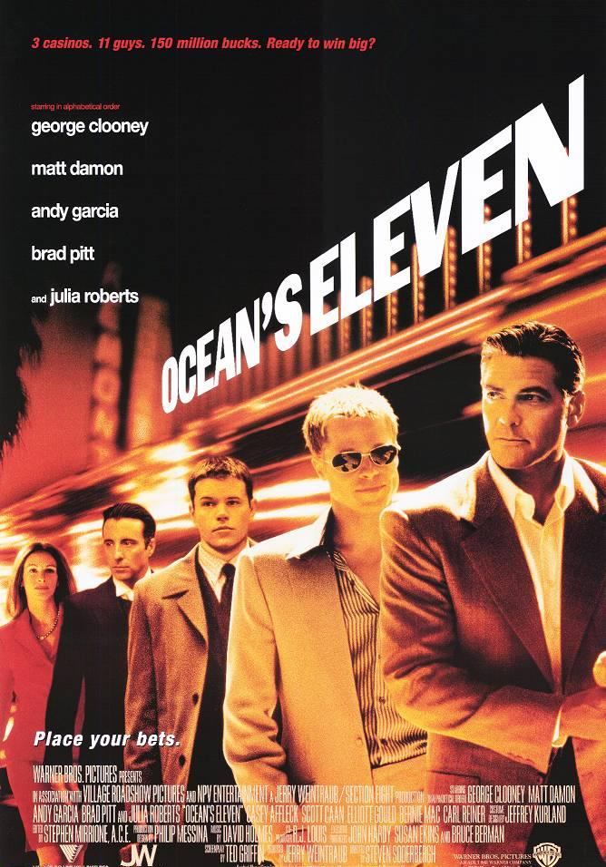
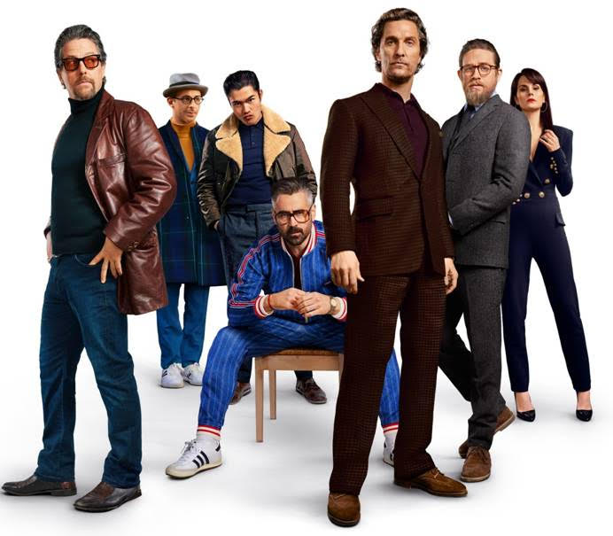
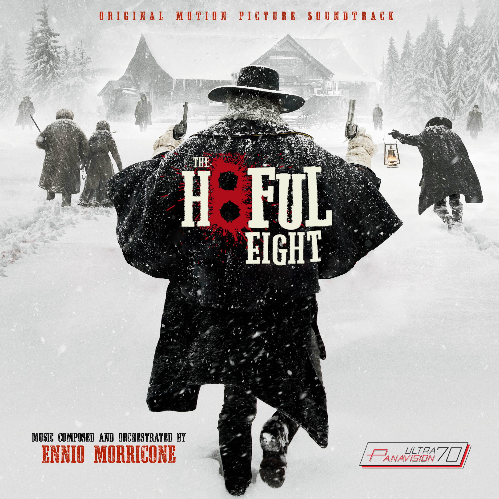
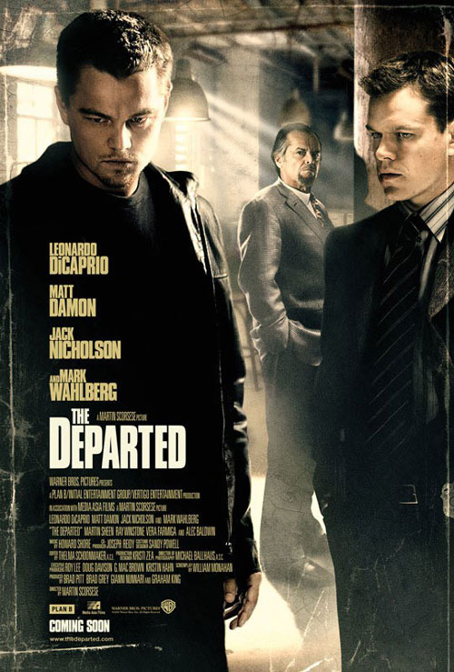
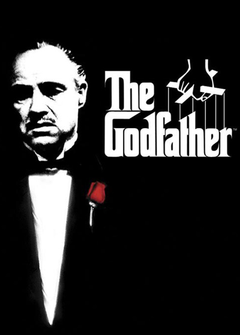

5.1: Sicario
Ratings : 🌟 7.6
Genre :ActionCrimeDrama
Release Date : 2 October 2015
Watch-Time : 2h 1min.
Director : Denis Villeneuve
Starring : Emily Blunt, Benicio del Toro, Josh Brolin, Victor Garber
Box-Office : $84.9 million
Storyline:
When drug violence worsens on the USA Mexico border, the FBI sends an idealistic agent, Kate Macer (Emily Blunt) on a mission to eradicate a drug cartel responsible for a bomb that had killed members of her team.
5.2: Shot Caller
Ratings : 🌟 7.3
Genre : CrimeDramaThriller
Release Date : 18 August 2017
Watch-Time : 2h 1min.
Director : Ric Roman Waugh
Starring : Nikolaj Coster-Waldau, Omari Hardwick, Lake Bell, Jon Bernthal, Emory Cohen, Jeffrey Donovan, Evan Jones, Benjamin Bratt, Holt McCallany, Juan Pablo Raba
Box-Office : $3.4 million
Storyline:
White-collar business professional, happily married accidentally commits a crime. Sentenced to prison time, he must adjust and learn the ways of prison life. Throughout this, he struggles to do what's best for his family on the outside. The choices he makes in prison will have major repercussions, both to himself and his family, if he makes the wrong one.
4.1: Taxi Driver
Ratings : 🌟 8.3
Genre : CrimeDrama
Release Date : 9 February 1976
Watch-Time : 1h 54min.
Director : Martin Scorsese
Starring : Robert De Niro, Jodie Foster, Cybill Shepherd
Box-Office : ?
Storyline:
Travis Bickle is an ex-Marine and Vietnam War veteran living in New York City. As he suffers from insomnia, he spends his time working as a taxi driver at night, watching porn movies at seedy cinemas during the day, or thinking about how the world, New York in particular, has deteriorated into a cesspool. He's a loner who has strong opinions about what is right and wrong with mankind. For him, the one bright spot in New York humanity is Betsy, a worker on the presidential nomination campaign of Senator Charles Palantine. He becomes obsessed with her. After an incident with her, he believes he has to do whatever he needs to make the world a better place in his opinion. One of his priorities is to be the savior for Iris, a twelve-year-old runaway and prostitute who he believes wants out of the profession and under the thumb of her pimp and lover Matthew.
4.2: The Fast and the Furious
Ratings : 🌟 6.8
Genre : ActionCrimeThriller
Release Date : 22 June 2001
Watch-Time : 1h 46min.
Director : Rob Cohen
Starring : Paul Walker, Vin Diesel, Michelle Rodriguez, Jordana Brewster, Rick Yune, Chad Lindberg, Johnny Strong, Ted Levine
Box-Office : $207.3 million
Storyline:
Los Angeles street racer Dominic Toretto falls under the suspicion of the LAPD as a string of high-speed electronics truck robberies rocks the area. Brian O'Connor, an officer of the LAPD, joins the ranks of Toretto's highly skilled racing crew undercover to convict Toretto. However, O'Connor finds himself both enamored with this new world and in love with Toretto's sister, Mia. As a rival racing crew gains strength, O'Connor must decide where his loyalty really lies.
3.1: Ocean's Eleven
Ratings : 🌟 7.7
Genre : CrimeThriller
Release Date : 7 December 2001
Watch-Time : 1h 56min.
Director : Steven Soderbergh
Starring : George Clooney, Matt Damon, Andy García, Brad Pitt, Julia Roberts
Box-Office : $450.7 million
Storyline:
Danny Ocean wants to score the biggest heist in history. He combines an eleven member team, including Frank Catton, Rusty Ryan and Linus Caldwell. Their target? The Bellagio, the Mirage and the MGM Grand. All casinos owned by Terry Benedict. It's not going to be easy, as they plan to get in secretly and out with $150 million.
3.2: The Gentlemen
Ratings : 🌟 7.8
Genre : ActionComedyCrime
Release Date : 24 January 2020
Watch-Time : 1h 53min.
Director : Guy Ritchie
Starring : Matthew McConaughey, Charlie Hunnam, Henry Golding, Michelle Dockery, Jeremy Strong, Eddie Marsan, Colin Farrell, Hugh Grant
Box-Office : $115.2 million
Storyline:
A talented American graduate of Oxford, using his unique skills, and audacity, creates a marijuana empire using the estates of impoverished British aristocrats. However, when he tries to sell his empire to a fellow American billionaire, a chain of events unfolds, involving blackmail, deception, mayhem and murder between street thugs, Russian oligarchs, Triad gangsters and gutter journalists.
2.1: The Hateful Eight
Ratings : 🌟 7.8
Genre : CrimeDramaMystery
Release Date : 30 December 2015
Watch-Time : 2h 48min.
Director : Quentin Tarantino
Starring : Samuel L. Jackson, Kurt Russell, Jennifer Jason Leigh, Walton Goggins, Demián Bichir, Tim Roth, Michael Madsen, Bruce Dern, James Parks, Channing Tatum
Box-Office : $155.8 million
Storyline:
Some time after the Civil War, a stagecoach hurtles through the wintry Wyoming landscape. Bounty hunter John Ruth and his fugitive captive Daisy Domergue race towards the town of Red Rock, where Ruth will bring Daisy to justice. Along the road, they encounter Major Marquis Warren (an infamous bounty hunter) and Chris Mannix (a man who claims to be Red Rock's new sheriff). Lost in a blizzard, the bunch seeks refuge at Minnie's Haberdashery. When they arrive they are greeted by unfamiliar faces: Bob, who claims to be taking care of the place while Minnie is gone; Oswaldo Mobray, the hangman of Red Rock; Joe Gage, a cow puncher; and confederate general Sanford Smithers.
2.2: The Irishman

Ratings : 🌟 7.9
Genre : BiographyCrimeDrama
Release Date : 27 November 2019
Watch-Time : 3h 29min.
Director : 3h 29min
Starring : Robert De Niro, Al Pacino, Joe Pesci, Ray Romano, Bobby Cannavale, Sebastian Maniscalco, Anna Paquin, Stephen Graham, Harvey Keitel
Box-Office : $8 million
Storyline:
Frank "The Irishman" Sheeran is a man with a lot on his mind. The former labor union high official and hitman, learned to kill serving in Italy during the Second World War. He now looks back on his life and the hits that defined his mob career, maintaining connections with the Bufalino crime family. In particular, the part he claims to have played in the disappearance of his life-long friend, Jimmy Hoffa, the former president of the International Brotherhood of Teamsters, who mysteriously vanished in late July 1975 at the age of 62.
1.1: The Departed
Ratings : 🌟 8.5
Genre : CrimeDramaThriller
Release Date : 6 October 2006
Watch-Time : 2h 31min.
Director : Martin Scorsese
Starring : Leonardo DiCaprio, Matt Damon, Jack Nicholson, Mark Wahlberg, Martin Sheen, Ray Winstone, Vera Farmiga, Alec Baldwin
Box-Office : $291.5 million
Storyline:
In this crime-action tour de force, the South Boston state police force is waging war on Irish-American organized crime. Young undercover cop Billy Costigan is assigned to infiltrate the mob syndicate run by gangland chief Frank Costello. While Billy quickly gains Costello's confidence, Colin Sullivan, a hardened young criminal who has infiltrated the state police as an informer for the syndicate is rising to a position of power in the Special Investigation Unit. Each man becomes deeply consumed by their double lives, gathering information about the plans and counter-plans of the operations they have penetrated. But when it becomes clear to both the mob and the police that there is a mole in their midst, Billy and Colin are suddenly in danger of being caught and exposed to the enemy - and each must race to uncover the identity of the other man in time to save themselves. But is either willing to turn on their friends and comrades they've made during their long stints undercover?
1.2: The Godfather
Ratings : 🌟 9.0
Genre : DramaCrime
Release Date : 24 March 1972
Watch-Time : 2h 55min.
Director : Francis Ford Coppola
Starring : Marlon Brando, Al Pacino, James Caan, Richard Castellano, Robert Duvall, Sterling Hayden, John Marley, Richard Conte, Diane Keaton
Box-Office : $246–287 million
Storyline:
The Godfather "Don" Vito Corleone is the head of the Corleone mafia family in New York. He is at the event of his daughter's wedding. Michael, Vito's youngest son and a decorated WW II Marine is also present at the wedding. Michael seems to be uninterested in being a part of the family business. Vito is a powerful man, and is kind to all those who give him respect but is ruthless against those who do not. But when a powerful and treacherous rival wants to sell drugs and needs the Don's influence for the same, Vito refuses to do it. What follows is a clash between Vito's fading old values and the new ways which may cause Michael to do the thing he was most reluctant in doing and wage a mob war against all the other mafia families which could tear the Corleone family apart.